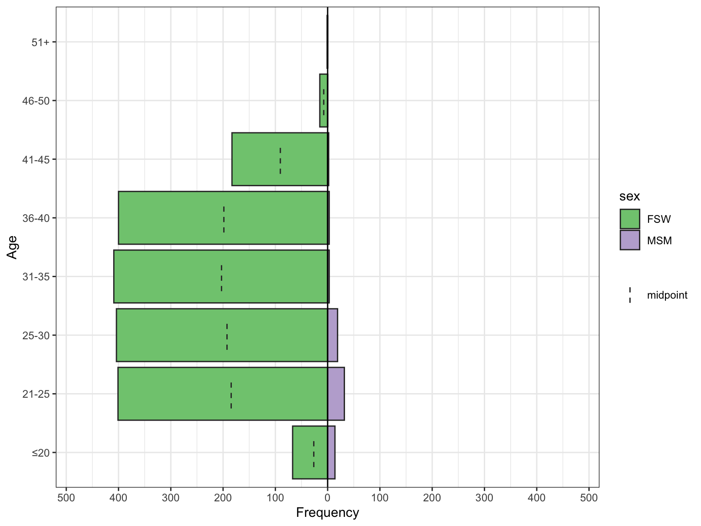
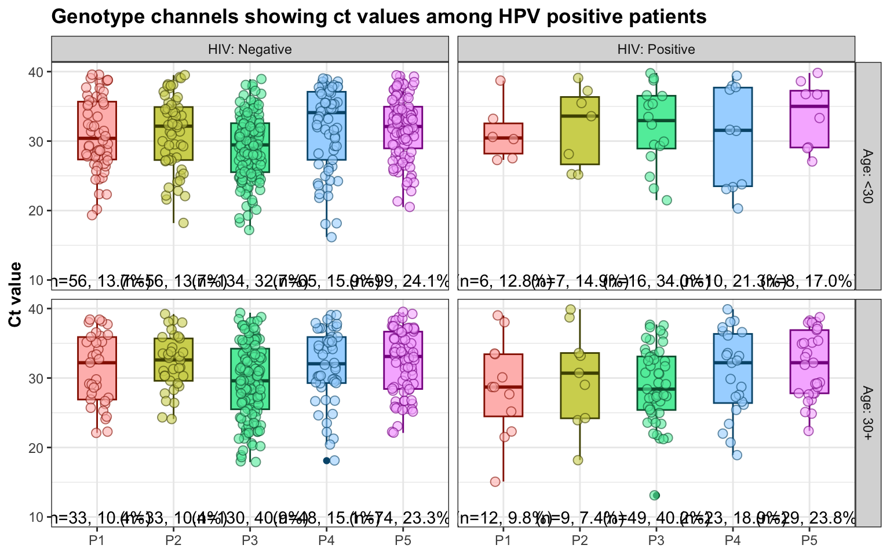

Code
here::here("data", "hpv_processed.rda") |>
load()
## load packages
library(tidyverse)
library(gtsummary)
## import custom-functions from utils
source(here::here("R", "utils.R"), echo = FALSE)here::here("data", "hpv_processed.rda") |>
load()
## load packages
library(tidyverse)
library(gtsummary)
## import custom-functions from utils
source(here::here("R", "utils.R"), echo = FALSE)This is a preliminary data analysis using baseline data from Gates-funded HPV study in Nairobi, 2022-2023. The screening period is between May/June 2022 and July 2023.
The study screened 1,968 participants and enrolled 701. However, due to filing issues which the team in Nairobi are currently fixing, the database comprises of only 1698 unique individuals (short of 270), which are used in the following analysis.
tbl_merge(
tbls = list(
combined |>
dplyr::select(
Gender, sex, Age, age_cat, hiv_self_report,
MaritalStatus, education_level
) |>
table1_total(missing = "ifany"),
combined |>
dplyr::select(
Gender, sex, Age, age_cat, hiv_self_report,
MaritalStatus, education_level
) |>
table1_by(by = sex,
byname = "Participant Type by Sex",
# missing = "ifany",
percent = "row",
add_N = FALSE,
add_total = FALSE)
),
tab_spanner = c(NA, "**Participant Type by Sex**")
)| Characteristic | N | Overall, N = 16981 | Participant Type by Sex | ||
|---|---|---|---|---|---|
| FSW, N = 1622 (95.9%)1 | MSM, N = 70 (4.14%)1 | p-value2 | |||
| Gender | 1,692 | 0.000 | |||
| cis-Female | 1,580 (93.4) | 1,580 (100.0) | 0 (0.0) | ||
| trans-Female | 42 (2.5) | 42 (100.0) | 0 (0.0) | ||
| cis-Male | 50 (3.0) | 0 (0.0) | 50 (100.0) | ||
| trans-Male | 20 (1.2) | 0 (0.0) | 20 (100.0) | ||
| Missing | 6 | ||||
| Sex | 1,692 | ||||
| FSW | 1,622 (95.9) | ||||
| MSM | 70 (4.1) | ||||
| Missing | 6 | ||||
| Age in years | 1,697 | 31.0 (25.0, 37.0) | 31.0 (25.0, 37.0) | 23.5 (21.0, 27.8) | 0.000 |
| Missing | 1 | ||||
| Age categories | 1,697 | 0.000 | |||
| <30 | 756 (44.5) | 693 (92.3) | 58 (7.7) | ||
| 30+ | 941 (55.5) | 928 (98.7) | 12 (1.3) | ||
| Missing | 1 | ||||
| HIV Status | 1,694 | 0.075 | |||
| Negative | 1,465 (86.5) | 1,408 (96.3) | 54 (3.7) | ||
| Positive | 229 (13.5) | 212 (93.8) | 14 (6.2) | ||
| Missing | 4 | ||||
| Martial Status | 1,637 | 0.056 | |||
| Single | 748 (45.7) | 718 (96.5) | 26 (3.5) | ||
| Having partners | 754 (46.1) | 712 (94.7) | 40 (5.3) | ||
| Married | 135 (8.2) | 133 (98.5) | 2 (1.5) | ||
| Missing | 61 | ||||
| Education Level | 1,293 | 0.000 | |||
| No | 12 (0.9) | 12 (100.0) | 0 (0.0) | ||
| Primary | 468 (36.2) | 465 (99.6) | 2 (0.4) | ||
| Secondary | 612 (47.3) | 584 (95.7) | 26 (4.3) | ||
| Vocational and above | 201 (15.5) | 184 (92.5) | 15 (7.5) | ||
| Missing | 405 | ||||
| 1 n (%); Median (IQR) | |||||
| 2 Fisher’s exact test; Wilcoxon rank sum test; Pearson’s Chi-squared test | |||||
combined |>
dplyr::mutate(
age_cat2 = cut(Age, c(0, 20, 30, 40, 50, 60, 100))
) |>
apyramid::age_pyramid(age_cat2, sex) +
labs(
y = "Frequency",
x = "Age"
) +
theme_classic()
fsw <-
combined |>
dplyr::filter(sex == "FSW") |>
dplyr::mutate(
Gender = forcats::fct_drop(Gender)
)
gtsummary::tbl_merge(
tbls = list(
fsw |>
dplyr::select(Gender:douching_with) |>
table1_total(missing = "ifany"),
fsw |>
dplyr::select(Gender:douching_with, hpv_result) |>
table1_by(by = hpv_result, byname = "HPV Result",
# missing = "ifany",
percent = "row",
add_N = FALSE,
add_total = FALSE)
),
tab_spanner = c(NA, "HPV Result")
)| Characteristic | N | Overall, N = 16221 | HPV Result | ||
|---|---|---|---|---|---|
| Negative, N = 948 (60.7%)1 | Positive, N = 615 (39.3%)1 | p-value2 | |||
| Gender | 1,622 | 0.000 | |||
| cis-Female | 1,580 (97.4) | 936 (61.4) | 589 (38.6) | ||
| trans-Female | 42 (2.6) | 12 (31.6) | 26 (68.4) | ||
| Sex | 1,622 | ||||
| FSW | 1,622 (100.0) | 948 (60.7) | 615 (39.3) | ||
| Age in years | 1,621 | 31.0 (25.0, 37.0) | 32.0 (26.0, 38.0) | 30.0 (25.0, 36.0) | 0.000 |
| Missing | 1 | ||||
| Age categories | 1,621 | 0.000 | |||
| <30 | 693 (42.8) | 358 (54.0) | 305 (46.0) | ||
| 30+ | 928 (57.2) | 589 (65.5) | 310 (34.5) | ||
| Missing | 1 | ||||
| HIV Status | 1,620 | 0.000 | |||
| Negative | 1,408 (86.9) | 850 (62.5) | 511 (37.5) | ||
| Positive | 212 (13.1) | 97 (48.5) | 103 (51.5) | ||
| Missing | 2 | ||||
| Martial Status | 1,563 | 0.463 | |||
| Single | 718 (45.9) | 410 (59.2) | 282 (40.8) | ||
| Having partners | 712 (45.6) | 427 (62.1) | 261 (37.9) | ||
| Married | 133 (8.5) | 80 (63.5) | 46 (36.5) | ||
| Missing | 59 | ||||
| Education Level | 1,245 | 0.002 | |||
| No | 12 (1.0) | 7 (70.0) | 3 (30.0) | ||
| Primary | 465 (37.3) | 299 (66.6) | 150 (33.4) | ||
| Secondary | 584 (46.9) | 324 (56.7) | 247 (43.3) | ||
| Vocational and above | 184 (14.8) | 92 (52.9) | 82 (47.1) | ||
| Missing | 377 | ||||
| Country of origin | 1,549 | 0.565 | |||
| Kenya | 1,546 (99.8) | 907 (60.8) | 584 (39.2) | ||
| Other | 3 (0.2) | 1 (33.3) | 2 (66.7) | ||
| Missing | 73 | ||||
| Counties lived in past 2 years | 1,622 | 0.657 | |||
| 0 | 821 (50.6) | 472 (59.9) | 316 (40.1) | ||
| 1 | 741 (45.7) | 444 (61.8) | 275 (38.2) | ||
| 2+ | 60 (3.7) | 32 (57.1) | 24 (42.9) | ||
| Own house in Nairobi | 1,527 | 35 (2.3) | 16 (47.1) | 18 (52.9) | 0.096 |
| Missing | 95 | ||||
| Pay rent | 816 | 767 (94.0) | 442 (59.2) | 304 (40.8) | 0.231 |
| Missing | 806 | ||||
| Income (KSH) | 1,531 | 10,000.0 (6,000.0, 16,000.0) | 10,000.0 (6,000.0, 15,000.0) | 10,000.0 (6,000.0, 18,500.0) | 0.155 |
| Missing | 91 | ||||
| Living with | 303 | 0.810 | |||
| Alone | 229 (75.6) | 122 (56.0) | 96 (44.0) | ||
| family | 0 (0.0) | 0 (NA) | 0 (NA) | ||
| friends | 0 (0.0) | 0 (NA) | 0 (NA) | ||
| Sex Partners | 42 (13.9) | 21 (52.5) | 19 (47.5) | ||
| Other | 32 (10.6) | 18 (60.0) | 12 (40.0) | ||
| Missing | 1,319 | ||||
| Current Smoking | 1,448 | 160 (11.0) | 101 (65.2) | 54 (34.8) | 0.222 |
| Missing | 174 | ||||
| Alcohol Use | 1,421 | 0.552 | |||
| Never | 393 (27.7) | 227 (59.9) | 152 (40.1) | ||
| Monthly or less | 397 (27.9) | 222 (58.3) | 159 (41.7) | ||
| Weekly | 279 (19.6) | 172 (64.9) | 93 (35.1) | ||
| 2-3 times per week | 280 (19.7) | 168 (61.1) | 107 (38.9) | ||
| 4+ times per week | 72 (5.1) | 44 (61.1) | 28 (38.9) | ||
| Missing | 201 | ||||
| Sex with alcohol use | 1,018 | 0.563 | |||
| Never | 314 (30.8) | 174 (57.4) | 129 (42.6) | ||
| Sometimes | 627 (61.6) | 379 (62.1) | 231 (37.9) | ||
| Often | 31 (3.0) | 17 (60.7) | 11 (39.3) | ||
| Always | 46 (4.5) | 28 (63.6) | 16 (36.4) | ||
| Missing | 604 | ||||
| Drug Use | 1,401 | 476 (34.0) | 284 (61.6) | 177 (38.4) | 0.562 |
| Missing | 221 | ||||
| Hysterectomy | 1,375 | 12 (0.9) | 6 (50.0) | 6 (50.0) | 0.554 |
| Missing | 247 | ||||
| Menopause | 1,345 | 18 (1.3) | 10 (55.6) | 8 (44.4) | 0.630 |
| Missing | 277 | ||||
| Pregnancy | 1,320 | 30 (2.3) | 16 (55.2) | 13 (44.8) | 0.525 |
| Missing | 302 | ||||
| Contraceptive use | 676 | ||||
| None | 226 (33.4) | 129 (60.0) | 86 (40.0) | ||
| Depo Provera Injection | 109 (16.1) | 66 (61.7) | 41 (38.3) | ||
| Female Condom | 1 (0.1) | 1 (100.0) | 0 (0.0) | ||
| Implant | 107 (15.8) | 56 (53.3) | 49 (46.7) | ||
| IUD | 25 (3.7) | 15 (65.2) | 8 (34.8) | ||
| Male Condom | 106 (15.7) | 56 (53.8) | 48 (46.2) | ||
| Oral/Pills | 95 (14.1) | 57 (60.6) | 37 (39.4) | ||
| Safe days | 5 (0.7) | 2 (40.0) | 3 (60.0) | ||
| Tubal Ligation | 2 (0.3) | 0 (0.0) | 2 (100.0) | ||
| Missing | 946 | ||||
| Ever tested for HPV | 1,541 | 398 (25.8) | 257 (67.1) | 126 (32.9) | 0.006 |
| Missing | 81 | ||||
| Ever received HPV vaccine | 1,474 | 5 (0.3) | 4 (80.0) | 1 (20.0) | 0.655 |
| Missing | 148 | ||||
| Ever tested for Anal cancer | 1,557 | 415 (26.7) | 249 (63.0) | 146 (37.0) | 0.396 |
| Missing | 65 | ||||
| Time since last anal cancer screen | 447 | 0.598 | |||
| <1 year | 98 (21.9) | 57 (60.6) | 37 (39.4) | ||
| 1-2 years | 123 (27.5) | 71 (60.2) | 47 (39.8) | ||
| 3-5 years | 120 (26.8) | 72 (62.1) | 44 (37.9) | ||
| >5 years | 106 (23.7) | 69 (68.3) | 32 (31.7) | ||
| Missing | 1,175 | ||||
| Result of last anal cancer screen | 331 | 4 (1.2) | 1 (25.0) | 3 (75.0) | 0.150 |
| Missing | 1,291 | ||||
| Condom use during last sex | 1,527 | 1,141 (74.7) | 660 (60.2) | 437 (39.8) | 0.598 |
| Missing | 95 | ||||
| Access to condom | 1,497 | 274 (18.3) | 145 (54.7) | 120 (45.3) | 0.026 |
| Missing | 125 | ||||
| Sexual Debut | 1,616 | 15.0 (9.0, 22.0) | 17.0 (10.0, 22.8) | 14.0 (8.0, 21.0) | 0.000 |
| Missing | 6 | ||||
| Year in sex work | 1,618 | 6.0 (3.0, 11.0) | 6.0 (3.0, 12.0) | 5.0 (3.0, 10.0) | 0.000 |
| Missing | 4 | ||||
| Num: casual partner | 1,618 | 0.162 | |||
| 0 | 695 (43.0) | 399 (59.6) | 270 (40.4) | ||
| 1 | 276 (17.1) | 170 (62.7) | 101 (37.3) | ||
| 2 | 299 (18.5) | 187 (65.4) | 99 (34.6) | ||
| 3+ | 348 (21.5) | 191 (57.2) | 143 (42.8) | ||
| Missing | 4 | ||||
| Num: repeated partner | 1,618 | 0.254 | |||
| 0 | 847 (52.3) | 491 (60.5) | 320 (39.5) | ||
| 1 | 261 (16.1) | 168 (65.9) | 87 (34.1) | ||
| 2 | 208 (12.9) | 118 (58.4) | 84 (41.6) | ||
| 3+ | 302 (18.7) | 170 (58.2) | 122 (41.8) | ||
| Missing | 4 | ||||
| Num: regular partner | 1,618 | 0.723 | |||
| 0 | 780 (48.2) | 446 (59.7) | 301 (40.3) | ||
| 1 | 446 (27.6) | 268 (62.5) | 161 (37.5) | ||
| 2 | 211 (13.0) | 123 (59.1) | 85 (40.9) | ||
| 3+ | 181 (11.2) | 110 (62.5) | 66 (37.5) | ||
| Missing | 4 | ||||
| Num: partner with unknown HIV status | 942 | ||||
| 1 | 942 (100.0) | 574 (63.1) | 335 (36.9) | ||
| Missing | 680 | ||||
| Num: casual partner with HIV status | 1,618 | 0.753 | |||
| 0 | 1,598 (98.8) | 937 (60.8) | 604 (39.2) | ||
| 1 | 13 (0.8) | 6 (50.0) | 6 (50.0) | ||
| 2 | 7 (0.4) | 4 (57.1) | 3 (42.9) | ||
| Missing | 4 | ||||
| Num: repeated partner with HIV status | 1,618 | 0.707 | |||
| 0 | 1,596 (98.6) | 935 (60.8) | 603 (39.2) | ||
| 1 | 13 (0.8) | 7 (53.8) | 6 (46.2) | ||
| 2 | 4 (0.2) | 3 (75.0) | 1 (25.0) | ||
| 3+ | 5 (0.3) | 2 (40.0) | 3 (60.0) | ||
| Missing | 4 | ||||
| Num: regular partner with HIV status | 1,618 | 0.081 | |||
| 0 | 1,599 (98.8) | 940 (60.9) | 603 (39.1) | ||
| 1 | 13 (0.8) | 3 (27.3) | 8 (72.7) | ||
| 2 | 5 (0.3) | 3 (60.0) | 2 (40.0) | ||
| 3+ | 1 (0.1) | 1 (100.0) | 0 (0.0) | ||
| Missing | 4 | ||||
| Num: casual partner with drug use | 1,391 | 0.109 | |||
| 0 | 1,137 (81.7) | 677 (61.7) | 420 (38.3) | ||
| 1 | 254 (18.3) | 140 (56.2) | 109 (43.8) | ||
| Missing | 231 | ||||
| Num: repeated partner with drug use | 1,374 | 0.160 | |||
| 0 | 1,115 (81.1) | 661 (61.5) | 414 (38.5) | ||
| 1 | 259 (18.9) | 144 (56.7) | 110 (43.3) | ||
| Missing | 248 | ||||
| Num: regular partner with drug use | 1,339 | 0.182 | |||
| 0 | 1,133 (84.6) | 678 (62.2) | 412 (37.8) | ||
| 1 | 206 (15.4) | 115 (57.2) | 86 (42.8) | ||
| Missing | 283 | ||||
| Num: partner with drug use | 1,395 | 0.260 | |||
| 0 | 1,197 (85.8) | 713 (61.8) | 441 (38.2) | ||
| 1 | 198 (14.2) | 111 (57.5) | 82 (42.5) | ||
| Missing | 227 | ||||
| Douching | 1,507 | 534 (35.4) | 312 (60.3) | 205 (39.7) | 0.837 |
| Missing | 115 | ||||
| Douching with | 521 | 0.810 | |||
| water | 64 (12.3) | 37 (58.7) | 26 (41.3) | ||
| other | 457 (87.7) | 266 (60.3) | 175 (39.7) | ||
| Missing | 1,101 | ||||
| 1 n (%); Median (IQR) | |||||
| 2 Pearson’s Chi-squared test; Wilcoxon rank sum test; Fisher’s exact test | |||||
# gtsummary::tbl_merge(
# tbls = list(
# fsw |>
# dplyr::select(hr_hpv_16:hpv_combined) |>
# table1_total(missing = "ifany"),
# fsw |>
# dplyr::select(hr_hpv_16:hpv_combined, hpv_result) |>
# table1_by(by = hpv_result, byname = "HPV Result",
# # missing = "ifany",
# percent = "row",
# add_N = FALSE,
# add_total = FALSE)
# ),
# tab_spanner = c(NA, "HPV Result")
# )
fsw |>
dplyr::select(hr_hpv_16:hr_p5) |>
setNames(paste0("P", 1:5)) |>
tidyr::pivot_longer(cols = everything()) |>
dplyr::filter(!is.na(value)) |>
dplyr::group_by(name, value) |>
dplyr::summarise(n = n()) |>
dplyr::mutate(
pct = n / sum(n),
pct = paste0(n, " (", scales::label_percent()(pct), ")")
) |>
dplyr::ungroup() |>
dplyr::filter(value != "No") |>
ggplot(aes(y = name, x = n)) +
geom_col(aes(fill = name), show.legend = FALSE) +
geom_label(aes(label = pct), hjust = 0) +
labs(
x = "Number",
y = "Genotype Channel",
title = "HPV Genotype Distribution among FSW"
) +
scale_x_continuous(
expand = c(.01, .01),
) +
theme_classic() +
theme(
plot.title = element_text(face = "bold"),
axis.title = element_text(face = "bold")
)
fsw |>
dplyr::select(hr_hpv_16:hr_p5, hiv_self_report) |>
setNames(c(paste0("P", 1:5), "HIV")) |>
tidyr::pivot_longer(cols = -HIV) |>
dplyr::filter(!is.na(value)) |>
dplyr::group_by(HIV, name, value) |>
dplyr::summarise(n = n()) |>
dplyr::mutate(
pct = n / sum(n),
pct = paste0(n, " (", scales::label_percent()(pct), ")")
) |>
dplyr::ungroup() |>
dplyr::filter(value != "No") |>
dplyr::filter(!is.na(HIV)) |>
ggplot(aes(y = name, x = n)) +
geom_col(aes(fill = name), show.legend = FALSE) +
geom_label(aes(label = pct), hjust = 0) +
labs(
x = "Number",
y = "Genotype Channel",
title = "HPV Genotype Distribution by HIV Status"
) +
scale_x_continuous(
expand = c(.01, .01),
limits = c(0, 320)
) +
facet_wrap(~ HIV, labeller = label_both) +
theme_classic() +
theme(
plot.title = element_text(face = "bold"),
axis.title = element_text(face = "bold")
)
fsw |>
dplyr::select(hr_hpv_16:hr_p5, hiv_self_report, age_cat) |>
setNames(c(paste0("P", 1:5), "HIV", "Age")) |>
tidyr::pivot_longer(cols = -c(HIV, Age)) |>
dplyr::filter(!is.na(value)) |>
dplyr::group_by(Age, HIV, name, value) |>
dplyr::summarise(n = n()) |>
dplyr::mutate(
pct = n / sum(n),
pct = paste0(n, " (", scales::label_percent()(pct), ")")
) |>
dplyr::ungroup() |>
dplyr::filter(value != "No") |>
dplyr::filter(!is.na(Age), !is.na(HIV)) |>
ggplot(aes(y = name, x = n)) +
geom_col(aes(fill = name), show.legend = FALSE) +
geom_label(aes(label = pct), hjust = 0) +
labs(
x = "Number",
y = "Genotype Channel",
title = "HPV Genotype Distribution by HIV Status"
) +
scale_x_continuous(
expand = c(.01, .01),
limits = c(0, 220)
) +
facet_grid(Age ~ HIV, labeller = label_both) +
theme_classic() +
theme(
plot.title = element_text(face = "bold"),
axis.title = element_text(face = "bold")
)
tbl_merge(
tbls = list(
fsw |>
dplyr::select(
Gender, sex, Age, age_cat, hiv_self_report,
MaritalStatus, education_level
) |>
table1_total(missing = "ifany"),
fsw |>
dplyr::select(
Gender, sex, Age, age_cat, hiv_self_report,
MaritalStatus, education_level, hpv_hiv
) |>
table1_by(by = hpv_hiv,
byname = "Combined HIV & HPV Status ",
# missing = "ifany",
percent = "row",
add_N = FALSE,
add_total = FALSE)
),
tab_spanner = c(NA, "**Combined HIV & HPV Status**")
)| Characteristic | N | Overall, N = 16221 | Combined HIV & HPV Status | ||||
|---|---|---|---|---|---|---|---|
| HIV+HPV+, N = 103 (6.60%)1 | HIV+HPV-, N = 97 (6.21%)1 | HIV-HPV+, N = 511 (32.7%)1 | Negative, N = 850 (54.5%)1 | p-value2 | |||
| Gender | 1,622 | 0.001 | |||||
| cis-Female | 1,580 (97.4) | 96 (6.3) | 97 (6.4) | 492 (32.3) | 838 (55.0) | ||
| trans-Female | 42 (2.6) | 7 (18.4) | 0 (0.0) | 19 (50.0) | 12 (31.6) | ||
| Sex | 1,622 | ||||||
| FSW | 1,622 (100.0) | 103 (6.6) | 97 (6.2) | 511 (32.7) | 850 (54.5) | ||
| Age in years | 1,621 | 31.0 (25.0, 37.0) | 36.0 (30.5, 40.0) | 37.0 (32.0, 41.3) | 28.0 (24.0, 34.0) | 32.0 (26.0, 37.0) | 0.000 |
| Missing | 1 | ||||||
| Age categories | 1,621 | 0.000 | |||||
| <30 | 693 (42.8) | 25 (3.8) | 19 (2.9) | 280 (42.2) | 339 (51.1) | ||
| 30+ | 928 (57.2) | 78 (8.7) | 77 (8.6) | 231 (25.8) | 511 (57.0) | ||
| Missing | 1 | ||||||
| HIV Status | 1,620 | 0.000 | |||||
| Negative | 1,408 (86.9) | 0 (0.0) | 0 (0.0) | 511 (37.5) | 850 (62.5) | ||
| Positive | 212 (13.1) | 103 (51.5) | 97 (48.5) | 0 (0.0) | 0 (0.0) | ||
| Missing | 2 | ||||||
| Martial Status | 1,563 | 0.000 | |||||
| Single | 718 (45.9) | 42 (6.1) | 57 (8.2) | 239 (34.6) | 353 (51.1) | ||
| Having partners | 712 (45.6) | 36 (5.2) | 31 (4.5) | 225 (32.7) | 396 (57.6) | ||
| Married | 133 (8.5) | 15 (11.9) | 4 (3.2) | 31 (24.6) | 76 (60.3) | ||
| Missing | 59 | ||||||
| Education Level | 1,245 | ||||||
| No | 12 (1.0) | 1 (10.0) | 1 (10.0) | 2 (20.0) | 6 (60.0) | ||
| Primary | 465 (37.3) | 30 (6.7) | 43 (9.6) | 120 (26.7) | 256 (57.0) | ||
| Secondary | 584 (46.9) | 28 (4.9) | 22 (3.9) | 219 (38.4) | 302 (52.9) | ||
| Vocational and above | 184 (14.8) | 11 (6.3) | 6 (3.4) | 71 (40.8) | 86 (49.4) | ||
| Missing | 377 | ||||||
| 1 n (%); Median (IQR) | |||||||
| 2 Fisher’s exact test; Kruskal-Wallis rank sum test; Pearson’s Chi-squared test | |||||||
fsw |>
dplyr::select(
Gender, age_cat, hiv_self_report,
MaritalStatus:menopause, contraceptive, hpv_test,
condom_lastsex:num_partner_reg,
num_partner_hiv_cas:num_partner_hiv_reg,
drug_sex_cas:drug_sex_reg, douching, douching_with,
response
) |>
dplyr::mutate(
contraceptive = as.numeric(contraceptive != "None")
) |>
labelled::set_variable_labels(.labels = vars, .strict = FALSE) |>
tbl_uvregression(
method = glm,
y = response,
method.args = list(family = binomial),
exponentiate = TRUE
)| Characteristic | N | OR1 | 95% CI1 | p-value |
|---|---|---|---|---|
| Gender | 1,563 | |||
| cis-Female | — | — | ||
| trans-Female | 3.44 | 1.76, 7.12 | <0.001 | |
| Age categories | 1,562 | |||
| <30 | — | — | ||
| 30+ | 0.62 | 0.50, 0.76 | <0.001 | |
| HIV Status | 1,561 | |||
| Negative | — | — | ||
| Positive | 1.77 | 1.31, 2.38 | <0.001 | |
| Martial Status | 1,506 | |||
| Single | — | — | ||
| Having partners | 0.89 | 0.72, 1.10 | 0.3 | |
| Married | 0.84 | 0.56, 1.23 | 0.4 | |
| Education Level | 1,204 | |||
| No | — | — | ||
| Primary | 1.17 | 0.32, 5.49 | 0.8 | |
| Secondary | 1.78 | 0.49, 8.32 | 0.4 | |
| Vocational and above | 2.08 | 0.56, 9.89 | 0.3 | |
| Country of origin | 1,494 | |||
| Kenya | — | — | ||
| Other | 3.11 | 0.30, 66.9 | 0.4 | |
| Counties lived in past 2 years | 1,563 | |||
| 0 | — | — | ||
| 1 | 0.93 | 0.75, 1.14 | 0.5 | |
| 2+ | 1.12 | 0.64, 1.93 | 0.7 | |
| Own house in Nairobi | 1,471 | |||
| No | — | — | ||
| Yes | 1.77 | 0.89, 3.54 | 0.10 | |
| Pay rent | 793 | |||
| No | — | — | ||
| Yes | 1.47 | 0.79, 2.83 | 0.2 | |
| Income (KSH) | 1,476 | 1.00 | 1.00, 1.00 | 0.3 |
| current_living | 288 | |||
| Alone | — | — | ||
| Sex Partners | 1.15 | 0.58, 2.26 | 0.7 | |
| Other | 0.85 | 0.38, 1.83 | 0.7 | |
| Current Smoking | 1,400 | 0.80 | 0.56, 1.14 | 0.2 |
| Alcohol Use | 1,372 | |||
| Never | — | — | ||
| Monthly or less | 1.07 | 0.80, 1.43 | 0.6 | |
| Weekly | 0.81 | 0.58, 1.12 | 0.2 | |
| 2-3 times per week | 0.95 | 0.69, 1.31 | 0.8 | |
| 4+ times per week | 0.95 | 0.56, 1.58 | 0.8 | |
| Sex with alcohol use | 985 | |||
| Never | — | — | ||
| Sometimes | 0.82 | 0.62, 1.09 | 0.2 | |
| Often | 0.87 | 0.38, 1.91 | 0.7 | |
| Always | 0.77 | 0.39, 1.47 | 0.4 | |
| Drug Use | 1,353 | 0.93 | 0.74, 1.18 | 0.6 |
| Hysterectomy | 1,329 | 1.58 | 0.49, 5.08 | 0.4 |
| Menopause | 1,299 | 1.26 | 0.48, 3.21 | 0.6 |
| Contraceptive use | 656 | 1.11 | 0.80, 1.56 | 0.5 |
| Ever tested for HPV | 1,484 | 0.71 | 0.55, 0.90 | 0.006 |
| Condom use during last sex | 1,473 | 1.07 | 0.84, 1.36 | 0.6 |
| Access to condom | 1,444 | 1.36 | 1.03, 1.77 | 0.027 |
| Sexual Debut | 1,558 | 1.00 | 1.00, 1.00 | 0.7 |
| Year in sex work | 1,560 | 0.99 | 0.98, 1.00 | 0.032 |
| Num: casual partner | 1,560 | |||
| 0 | — | — | ||
| 1 | 0.88 | 0.66, 1.17 | 0.4 | |
| 2 | 0.78 | 0.59, 1.04 | 0.10 | |
| 3+ | 1.11 | 0.85, 1.44 | 0.5 | |
| Num: repeated partner | 1,560 | |||
| 0 | — | — | ||
| 1 | 0.79 | 0.59, 1.06 | 0.13 | |
| 2 | 1.09 | 0.80, 1.49 | 0.6 | |
| 3+ | 1.10 | 0.84, 1.44 | 0.5 | |
| Num: regular partner | 1,560 | |||
| 0 | — | — | ||
| 1 | 0.89 | 0.70, 1.14 | 0.4 | |
| 2 | 1.02 | 0.75, 1.40 | 0.9 | |
| 3+ | 0.89 | 0.63, 1.24 | 0.5 | |
| Num: casual partner with HIV status | 1,560 | |||
| 0 | — | — | ||
| 1 | 1.55 | 0.48, 4.98 | 0.4 | |
| 2 | 1.16 | 0.23, 5.30 | 0.8 | |
| Num: repeated partner with HIV status | 1,560 | |||
| 0 | — | — | ||
| 1 | 1.33 | 0.43, 4.02 | 0.6 | |
| 2 | 0.52 | 0.03, 4.05 | 0.6 | |
| 3+ | 2.33 | 0.38, 17.7 | 0.4 | |
| Num: regular partner with HIV status | 1,560 | |||
| 0 | — | — | ||
| 1 | 4.16 | 1.20, 19.0 | 0.036 | |
| 2 | 1.04 | 0.14, 6.29 | >0.9 | |
| 3+ | 0.00 | >0.9 | ||
| Num: casual partner with drug use | 1,346 | |||
| 0 | — | — | ||
| 1 | 1.25 | 0.95, 1.66 | 0.11 | |
| Num: repeated partner with drug use | 1,329 | |||
| 0 | — | — | ||
| 1 | 1.22 | 0.92, 1.61 | 0.2 | |
| Num: regular partner with drug use | 1,291 | |||
| 0 | — | — | ||
| 1 | 1.23 | 0.91, 1.67 | 0.2 | |
| Douching | 1,453 | 1.02 | 0.82, 1.27 | 0.8 |
| Douching with | 504 | |||
| water | — | — | ||
| other | 0.94 | 0.55, 1.61 | 0.8 | |
| 1 OR = Odds Ratio, CI = Confidence Interval | ||||
mod_lm <- glm(
response ~ Gender + age_cat + hiv_self_report +
hpv_test + condom_access + sex_work_yr + num_partner_hiv_reg,
family = binomial,
data = fsw
)
mod_lm |>
gtsummary::tbl_regression(
exponentiate = TRUE
)| Characteristic | OR1 | 95% CI1 | p-value |
|---|---|---|---|
| Gender | |||
| cis-Female | — | — | |
| trans-Female | 2.84 | 1.32, 6.49 | 0.009 |
| Age categories | |||
| <30 | — | — | |
| 30+ | 0.63 | 0.50, 0.81 | <0.001 |
| HIV Status | |||
| Negative | — | — | |
| Positive | 2.02 | 1.45, 2.82 | <0.001 |
| Ever tested for HPV | 0.80 | 0.61, 1.04 | 0.10 |
| Access to condom | 1.43 | 1.07, 1.89 | 0.014 |
| Year in sex work | 0.99 | 0.97, 1.00 | 0.2 |
| Num: regular partner with HIV status | |||
| 0 | — | — | |
| 1 | 2.30 | 0.59, 11.1 | 0.2 |
| 2 | 1.55 | 0.20, 9.53 | 0.6 |
| 3+ | 0.00 | >0.9 | |
| 1 OR = Odds Ratio, CI = Confidence Interval | |||
On technical side